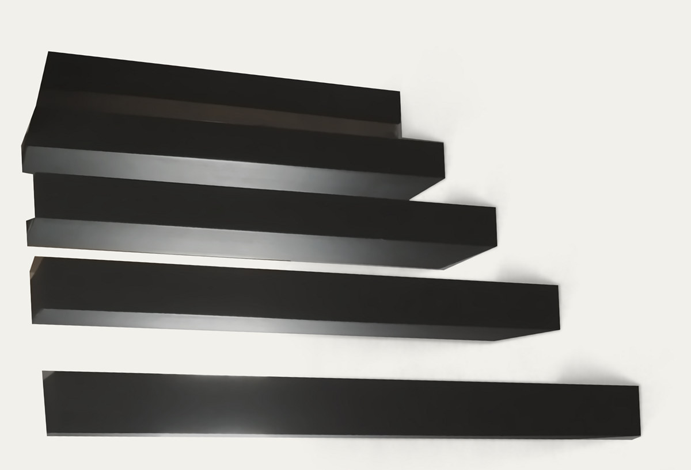
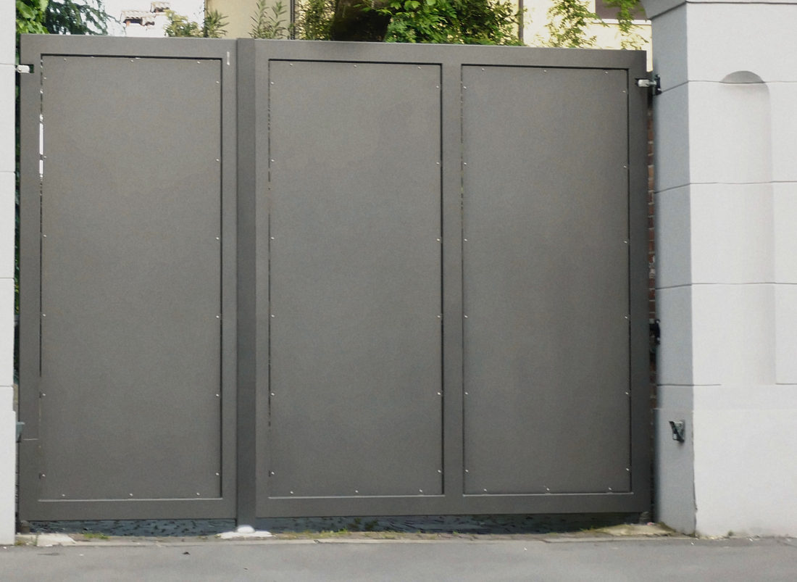
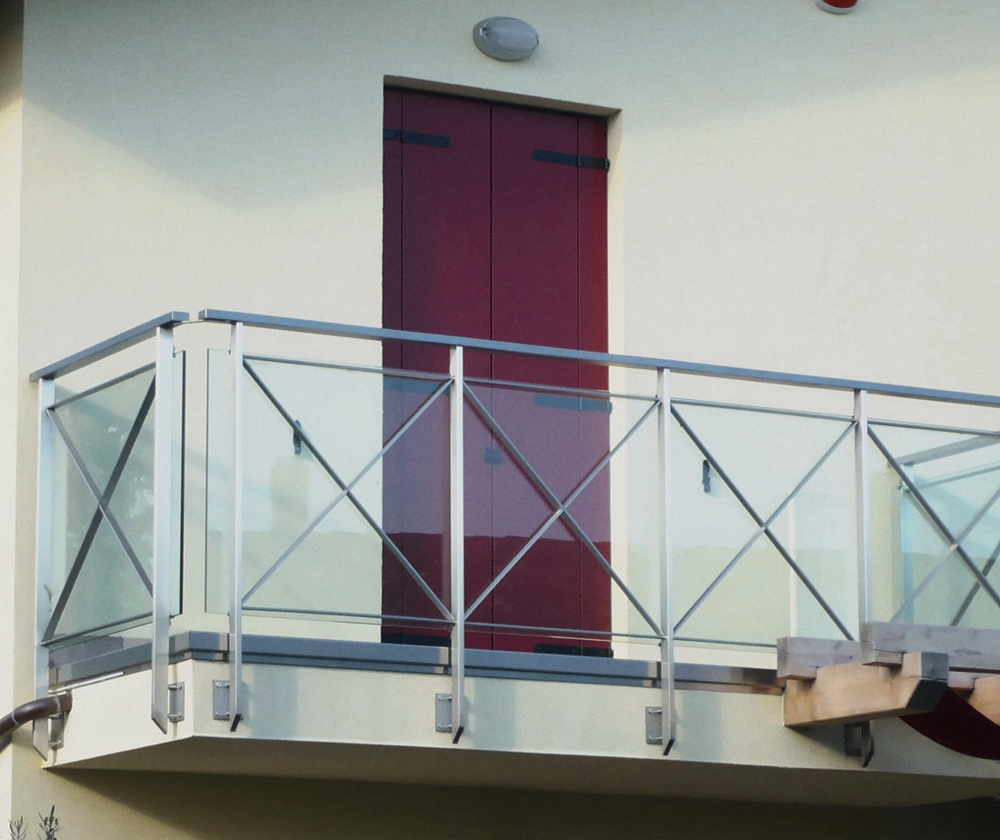
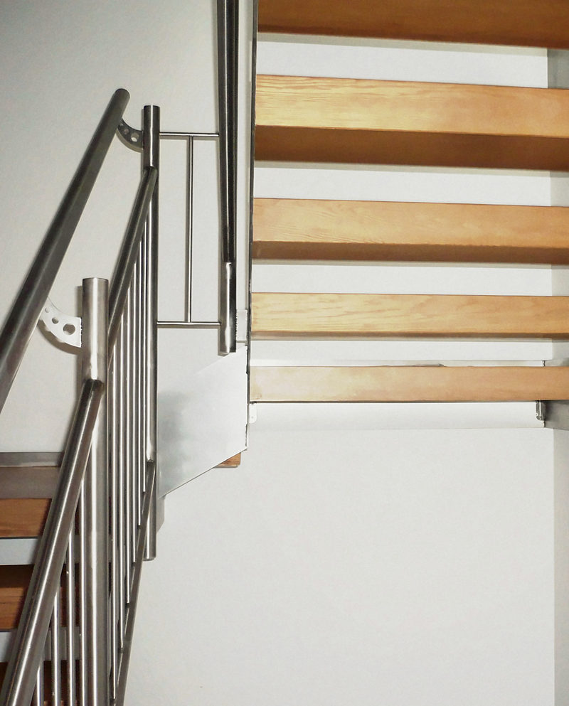
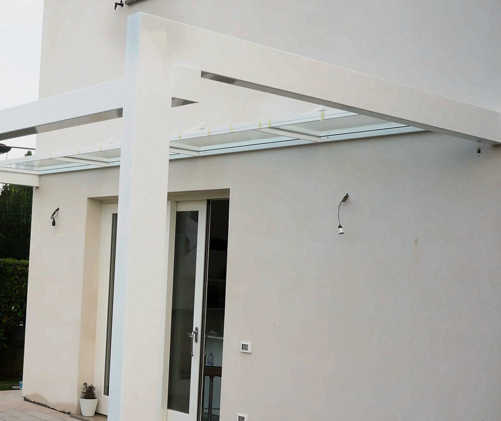
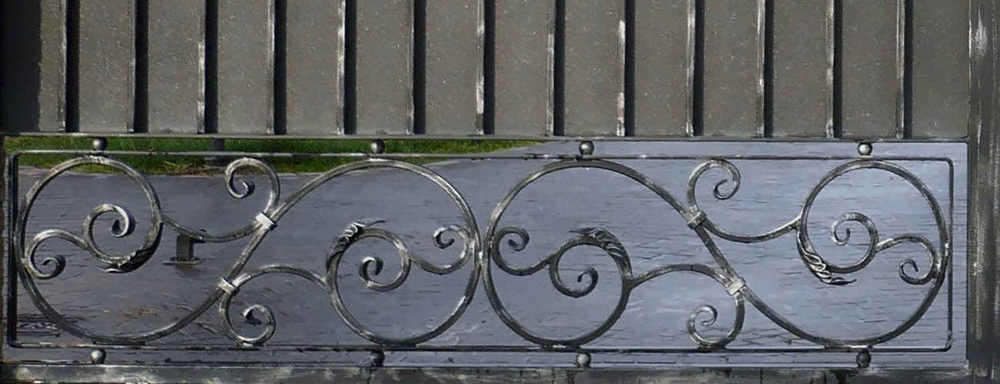
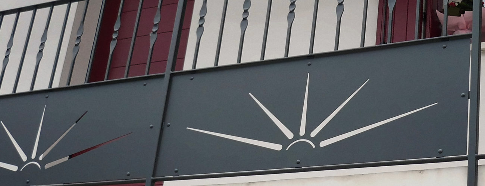
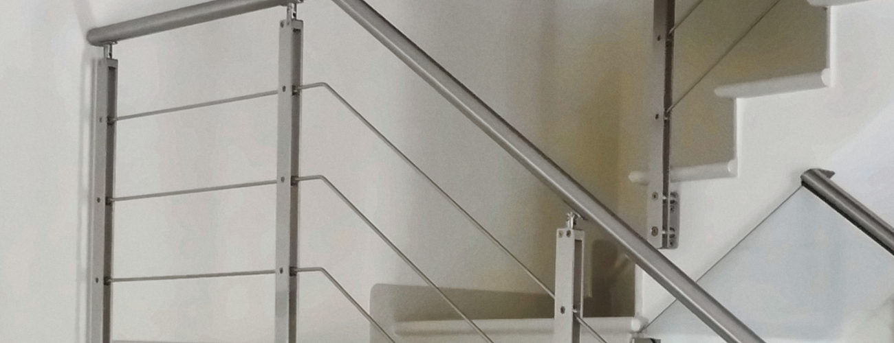
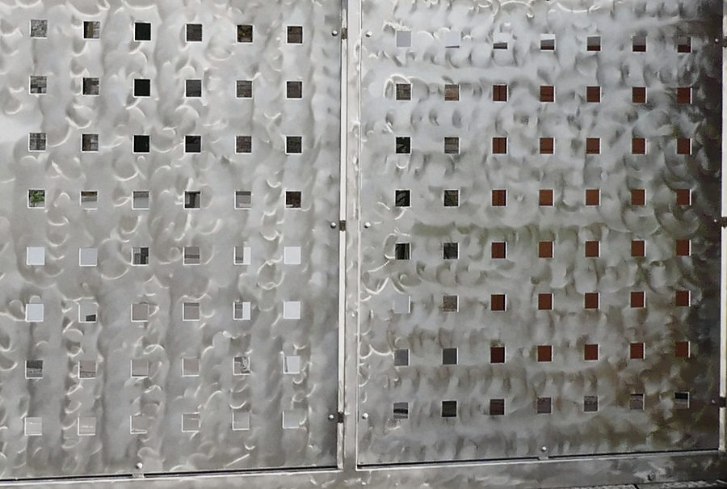

- Fissata solo al muro
- Niente montanti
- Su misura per quel vano
Ferro su misura, dal 1959
Cancelli in ferro battuto e lamiera, scale, parapetti, capottine e serramenti. Un'officina di Saonara, in provincia di Padova.
I lavori
Ogni pezzo si disegna per il posto in cui va: un cortile, un vano scala, un balcone.

Cancelli
In ferro battuto e in lamiera. Qui un cancello a tre pannelli in lamiera.
I cancelli
Parapetti e ringhiere
Per balconi e per scale. Qui un parapetto a croci.
I parapetti
Scale
Su misura, con ringhiere e corrimano in inox.
Le scale
Capottine
Pergole e pensiline, con copertura in vetro o in policarbonato.
Le capottineE poi serramenti, serrature, saldature e riparazioni in genere.
Ferro battuto, lamiera e inox

Ferro battuto. Cancelli in ferro battuto: qui la fascia a volute di un cancello a due ante.
Lavoro Ferridea

Lamiera. Cancelli e parapetti in lamiera: qui una ringhiera con il pannello traforato a raggiera.
Lavoro Ferridea

Inox. Parapetti, corrimano e scale in acciaio inox: qui un parapetto a cavi tesi.
Lavoro Ferridea
Nel settore dal 1959
Ferridea è un'officina padovana di carpenteria metallica e infissi, a Saonara. Lavora acciaio inox, ferro e alluminio con impianti che lavorano di precisione, e segue ogni pezzo dall'inizio alla fine.
Dallo studio alla realizzazione, e anche dopo
049 879 2451Telefono e fax
Cellulare 335 520 3918
Viale Veneto 32, 35020 Saonara (PD)
Apri la mappa
